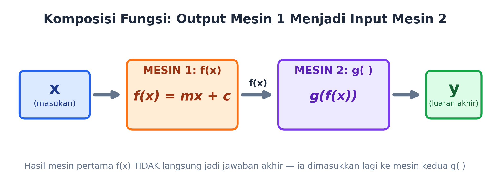
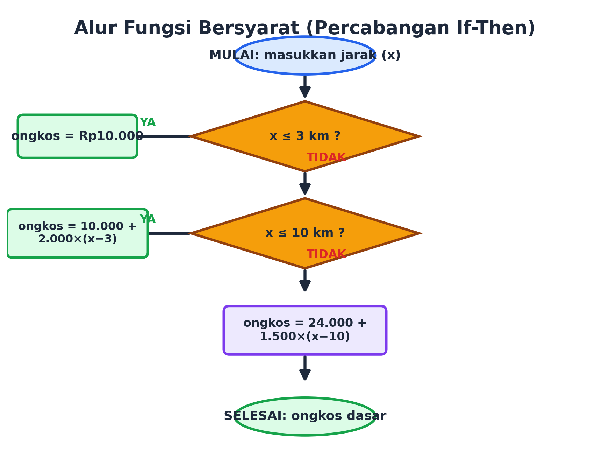
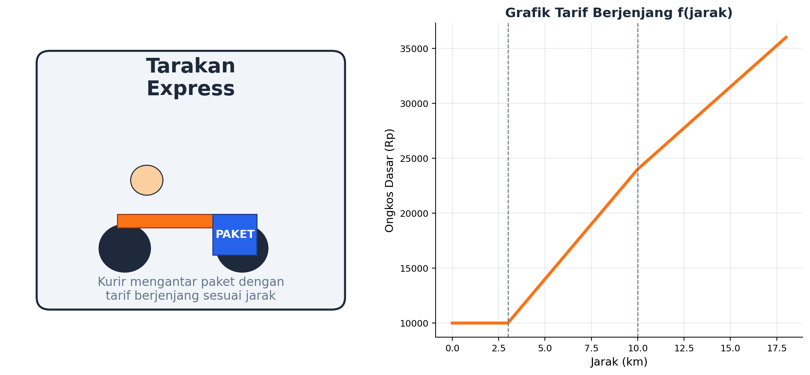

Minggu lalu kalian sudah kenalan sama satu mesin fungsi. Sekarang saatnya naik level: merangkai DUA mesin sekaligus, dan bikin mesin yang bisa "mikir" memilih aturan sendiri!
Kelas VIII • SMP Negeri 14 Tarakan • Problem Based LearningMasih ingat f(x) = mx + c dari pertemuan lalu? Satu mesin, satu aturan tetap, langsung dapat hasil. Nah, di dunia nyata, satu mesin fungsi aja sering nggak cukup. Kadang kita butuh merangkai beberapa mesin sekaligus, dan mesin itu juga harus bisa memilih aturan yang berbeda-beda tergantung situasinya. Yuk kita bongkar triknya!
Bayangin gini: kalian masukin angka ke Mesin 1, keluar suatu hasil. Eh, ternyata hasil itu BUKAN jawaban akhir — dia harus dimasukkan lagi ke Mesin 2 buat diproses sekali lagi, baru deh keluar jawaban final. Nah, itu namanya KOMPOSISI FUNGSI, ditulis g(f(x)).

Output Mesin 1 (f(x)) menjadi input Mesin 2 (g). Jangan berhenti di tengah jalan!
🧺 Analoginya kayak nyuci baju: baju kotor masuk mesin cuci (Mesin 1) → keluar baju basah bersih. Tapi itu belum selesai kan? Baju basah itu harus masuk lagi ke "mesin" jemuran/pengering (Mesin 2) → baru keluar baju kering siap pakai. Dua proses berantai, itulah komposisi!
Sekarang bayangin mesin yang lebih pintar lagi: dia bisa milih aturan berbeda tergantung kondisi yang dia terima. Ini namanya FUNGSI BERSYARAT, pakai logika JIKA...MAKA (kalau di bahasa pemrograman disebut if-then-else).
Bentuk umum:
JIKA (syarat 1) MAKA proses 1
LAINNYA JIKA (syarat 2) MAKA proses 2
LAINNYA proses 3
Contoh gampangnya: tarif parkir motor. Jam pertama Rp2.000, jam berikutnya Rp1.000/jam. Mesin kasir parkir itu "mikir": kalau durasi ≤ 1 jam, pakai tarif A. Kalau lebih, pakai tarif B. Itulah fungsi bersyarat beraksi!

Si mesin "memilih" jalur proses sesuai kondisi yang cocok
Sekarang, waktunya kalian jadi "insinyur" buat jasa kurir lokal bernama Tarakan Express. Tugas kalian: rancang sistem penghitung ongkos kirim yang adil, pakai DUA mesin fungsi sekaligus!

Semakin jauh jaraknya, semakin curam kenaikan tarifnya — tapi tetap adil dan konsisten
Jarak ≤ 3 km → ongkos = Rp10.000 (flat)
3 < jarak ≤ 10 km → ongkos = Rp10.000 + Rp2.000 × (jarak − 3)
Jarak > 10 km → ongkos = Rp24.000 + Rp1.500 × (jarak − 10)
Coba kita hitung bareng buat jarak 6 km: karena 6 km ada di antara 3 dan 10 km, kita pakai rumus kedua → 10.000 + 2.000 × (6−3) = 10.000 + 6.000 = Rp16.000.
Jika ongkos dasar > Rp20.000 DAN pelanggan adalah member → ongkos akhir = ongkos dasar × 0,9 (diskon 10%)
Selain itu → ongkos akhir = ongkos dasar (tidak berubah)
Nah di sinilah komposisi fungsi kepakai: HASIL dari Mesin 1 (ongkos dasar) menjadi INPUT buat Mesin 2. Coba kita lanjutkan contoh jarak 10 km untuk pelanggan member:
| Langkah | Perhitungan | Hasil |
|---|---|---|
| Mesin 1: ongkos dasar | 10.000 + 2.000 × (10−3) | Rp24.000 |
| Mesin 2: ongkos akhir (member) | 24.000 × 0,9 (karena >20.000 & member) | Rp21.600 |
Coba sekarang kalian hitung sendiri: berapa ongkos akhir untuk jarak 15 km kalau pelanggannya BUKAN member? (Petunjuk: hitung dulu Mesin 1, baru cek syarat Mesin 2 — lalu buktikan jawaban kalian di kotak "Coba Sendiri" di bawah!)
Supaya aturan tadi bisa dijalankan komputer, kita tulis dalam bentuk pseudocode — semacam "resep" langkah demi langkah yang mudah dibaca manusia, sebelum diubah jadi kode pemrograman sungguhan.
Keren, kan? Ini persis logika yang dipakai aplikasi ojek online sungguhan buat menghitung ongkos kalian!
Programmer yang teliti selalu mengecek "kasus tepi" — nilai yang persis di batas syarat. Coba pikirkan:
Kalau kalian nggak teliti mengecek kasus-kasus kayak gini, sistemnya bisa jadi nggak adil buat sebagian pelanggan. Makanya, selalu uji rancangan kalian dengan angka-angka "jebakan" di titik batas!
Masukkan jarak pengiriman dan centang kalau pelanggannya member, lalu lihat bagaimana KEDUA mesin fungsi bekerja berantai untuk menghasilkan ongkos akhir!
Pelanggan bernama Bu Aisyah adalah member Tarakan Express. Dia mengirim paket dengan ongkos dasar hasil hitungan Mesin 1 sebesar tepat Rp20.000. Berapa ongkos akhir yang harus dibayar Bu Aisyah?
Klik satu istilah di kolom kiri, lalu klik pasangannya yang tepat di kolom kanan.
💬 Setelah menjawab, diskusikan alasan kalian dengan kelompok dan tuliskan di LKPD Pertemuan 2 ya!